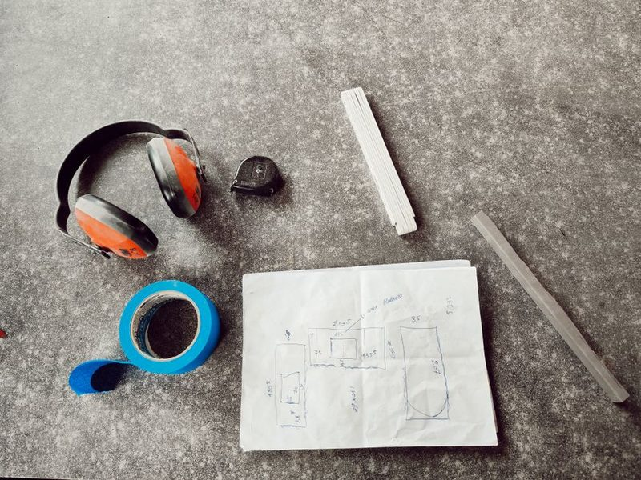

Ferramenta · roda no navegador
Cota Rapida
As tres contas que aparecem toda hora no meio de um trabalho: conversao de unidade, perda de corte e conferencia de esquadro pela diagonal.

A Cota Rapida existe porque as mesmas tres contas se repetiam em quase toda folha do caderno. Ela nao guarda projeto, nao pede cadastro e nao envia nada: o que voce digita fica no proprio navegador enquanto a pagina estiver aberta.
O que ela calcula
| Conta | Entrada | Saida |
|---|---|---|
| Conversao | mm, cm, m, polegada fracionaria | equivalente nas demais |
| Perda de corte | comprimento, n de pecas, espessura da lamina | material total necessario |
| Diagonal | lados do retangulo | diagonal teorica para conferir esquadro |
| Divisao igual | vao e n de espacos | cota de cada marcacao a partir da origem |
A conta da perda de corte
E a mais util e a mais esquecida. Quatro pecas de 50 cm nao saem de uma tabua de 2 m: cada corte consome a espessura da lamina, tipicamente entre 2 e 3 mm numa serra circular. Com quatro cortes, faltam cerca de 10 mm, e a ultima peça sai curta.
A divisao igual
Distribuir prateleiras num vao e outro caso classico: dividir 180 cm em quatro espacos nao significa marcar de 45 em 45, porque a espessura de cada prateleira entra na conta. A ferramenta devolve as cotas a partir de uma unica origem, justamente para o erro nao se acumular.
Limitacoes
A Cota Rapida nao substitui projeto nem calculo estrutural. Ela resolve aritmetica de bancada. Carga, dimensionamento de estrutura e qualquer coisa que envolva seguranca de pessoas exigem profissional habilitado.